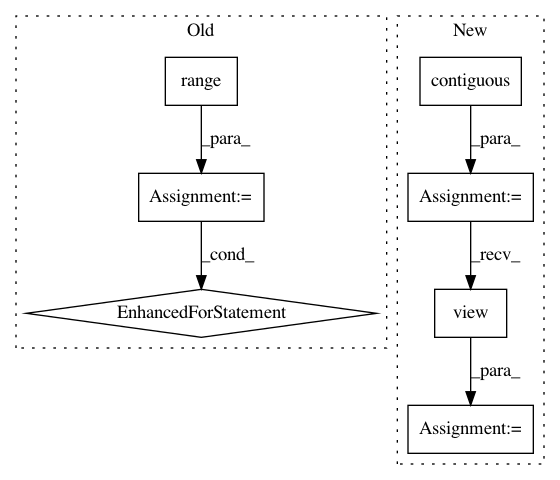

ca5ec9585e711f63acbe337bc38c37520189b9d7,se3_cnn/convolution.py,SE3KernelCombination,backward,#SE3KernelCombination#Any#,152
Before Change
b_el = self.kernels[i][j].size(0)
basis_kernels_ij = self.kernels[i][j].view(b_el, -1)
for ii in range(self.multiplicites_out[i]):
si = slice(begin_i + ii * self.dims_out[i], begin_i + (ii + 1) * self.dims_out[i])
for jj in range(self.multiplicites_in[j]):
sj = slice(begin_j + jj * self.dims_in[j], begin_j + (jj + 1) * self.dims_in[j])
grad_weight[weight_index : weight_index + b_el] = torch.mm(basis_kernels_ij, grad_kernel[si, sj].contiguous().view(-1, 1)).view(-1)
weight_index += b_el
begin_j += self.multiplicites_in[j] * self.dims_in[j]
begin_i += self.multiplicites_out[i] * self.dims_out[i]
time_logging.end("kernel combination (backward)", time)
After Change
sj = slice(begin_j, begin_j + mj * self.dims_in[j])
grad = grad_kernel[si, sj] // [I * i, J * j, x, y, z]
grad = grad.contiguous().view(mi, self.dims_out[i], mj, self.dims_in[j], -1).transpose(1, 2) // [I, J, i, j, x*y*z]
grad = grad.contiguous().view(mi * mj, -1) // [I*J, i*j*x*y*z]
grad = torch.mm(grad, basis_kernels_ij.transpose(0, 1)) // [I*J, beta]
grad_weight[weight_index : weight_index + mi * mj * b_el] = grad.view(-1) // [I * J * beta]
weight_index += mi * mj * b_el
begin_j += self.multiplicites_in[j] * self.dims_in[j]
In pattern: SUPERPATTERN
Frequency: 3
Non-data size: 7
Instances
Project Name: mariogeiger/se3cnn
Commit Name: ca5ec9585e711f63acbe337bc38c37520189b9d7
Time: 2017-08-09
Author: geiger.mario@gmail.com
File Name: se3_cnn/convolution.py
Class Name: SE3KernelCombination
Method Name: backward
Project Name: maciejkula/spotlight
Commit Name: bc51dbc0c56f68ed30857755026633f78eef1ae8
Time: 2017-08-20
Author: maciej.kula@gmail.com
File Name: spotlight/layers.py
Class Name: BloomEmbedding
Method Name: forward
Project Name: cornellius-gp/gpytorch
Commit Name: e5970f0a822c210b2859708b9556878b01c5b59f
Time: 2017-09-09
Author: ruihan.wu14@gmail.com
File Name: gpytorch/utils/kronecker_product.py
Class Name:
Method Name: kronecker_product_toeplitz_matmul